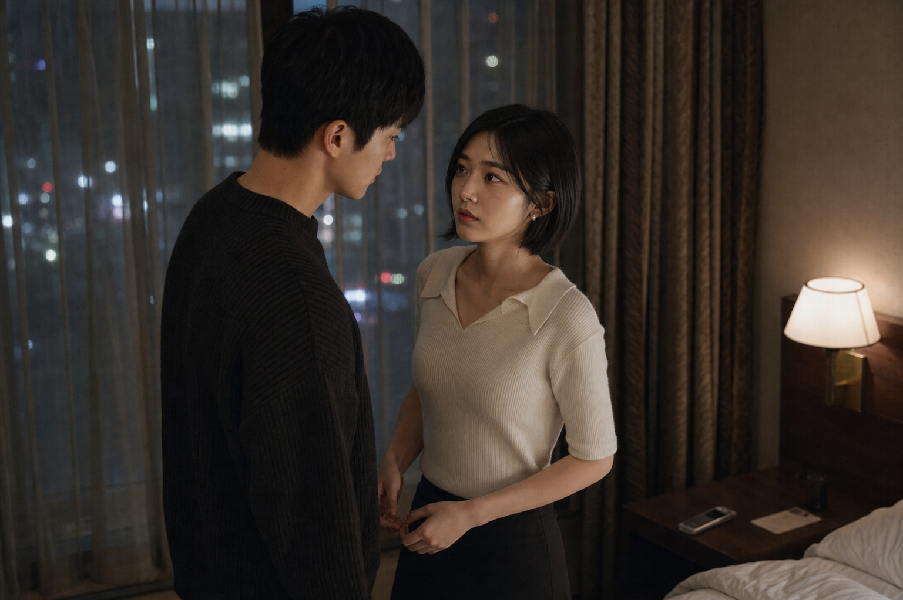

132. 도쿄 첫밤
나리타 공항의 공기는 인천보다 조금 더 건조했다.
비행기 문을 나서는 순간, 용식은 익숙한 일본어 안내방송을 들었다. 여름에 두 달을 보낸 나라였는데도 겨울 공항은 다른 얼굴이었다. 사람들의 코트 색은 더 어두웠고, 창밖 활주로 위 바람은 낮게 깔려 있었다.
학교 프로그램 학생들은 인솔자 주변에 모여 입국 절차를 확인하고 있었다. 용식은 그 사이에 서 있었지만, 시선은 자꾸 뒤쪽으로 갔다. 서윤은 두 줄 뒤에서 여권을 들고 있었다. 공항에서는 아직 남이었다.
서윤은 아무 말도 하지 않았다.
그 침묵이 더 오래 남았다.
입국장을 나와 리무진버스 표를 사는 곳에서, 용식은 학교 일행에게 잠시 개인 일정이 있다고 둘러댔다. 인솔자는 이미 그의 개인 연장 일정을 알고 있었고, 별다른 의심 없이 고개를 끄덕였다. 진짜 서류가 다시 한 번 거짓말의 문을 열어 줬다.
버스 승강장 밖으로 나오자 서윤이 조금 떨어진 곳에서 기다리고 있었다. 검은 코트의 허리끈이 단정하게 묶여 있었고, 짧은 단발 끝에는 비행기 안 건조한 공기 때문인지 잔머리가 조금 일어나 있었다. 그녀는 용식을 보자마자 웃지 않았다.
한서윤 "이제 말 걸어도 돼?"
김용식 "미안해요."
한서윤 "공항에서부터 계속 미안하네."
김용식 "초연이가 봐서..."
한서윤 "알아. 그래서 참았잖아."
말끝이 차분했다. 화를 내지 않는 목소리라서 더 아팠다. 용식은 캐리어 손잡이를 고쳐 잡았다.
김용식 "호텔 가요. 추워요."
한서윤 "응. 오늘부터는 내가 모르는 사람 아니지?"
용식은 바로 대답하지 못했다.
서윤은 그 짧은 침묵을 듣고, 먼저 걸음을 옮겼다.
리무진버스 안에서 두 사람은 나란히 앉았다. 창가에는 서윤이 앉고, 용식은 통로 쪽에 앉았다. 버스가 고속도로로 올라가자 공항의 불빛이 뒤로 밀려났다. 서윤은 창밖을 보고 있었고, 용식은 폴더폰을 열었다 닫았다.
아직 답장을 보내지 못했다.
서윤이 옆에서 말했다.
한서윤 "보내."
김용식 "뭘요?"
한서윤 "도착했다고. 그거 기다릴 거 아니야."
용식은 화면을 봤다. 서윤은 창밖을 보고 있었지만, 목소리는 바로 옆에서 낮게 붙었다.
김용식 "서윤 씨."
한서윤 "괜찮아. 대신 나도 옆에 있다는 건 잊지 마."
그 말은 허락 같았지만, 사실은 조건이었다.
용식은 답장을 보냈다.
초연의 답장은 바로 왔다.
용식은 손끝이 멈췄다.
한서윤은 그 화면을 보지 못했지만, 용식의 숨이 막히는 걸 느낀 듯했다.
한서윤 "또 물어봐?"
김용식 "응."
한서윤 "혼자라고 해."
김용식 "그럼..."
한서윤 "어차피 그렇게 말할 거잖아."
버스 창문에 두 사람 얼굴이 희미하게 겹쳤다. 용식은 거짓말을 입력했다.
보내고 나서 그는 폴더폰을 닫았다.
서윤은 웃었다. 아주 작게.
한서윤 "돈도 내주고, 비행기도 같이 타고, 호텔도 같이 가는데. 문자 하나에서는 또 없는 사람이네."
용식은 할 말이 없었다.
도쿄 시내에 들어서자 빌딩 불빛이 젖은 유리처럼 버스 창에 번졌다. 호텔은 신주쿠 골목 안쪽에 있었다. 로비는 작고 따뜻했고, 프런트 직원은 두 사람을 번갈아 보며 예약 확인서를 받았다. 용식이 여권 두 개와 카드키를 받아 들자 서윤의 시선이 그 손에 멈췄다.
한서윤 "방 하나야?"
김용식 "예약할 때... 그렇게 했어요."
한서윤 "물어보지도 않고?"
김용식 "싫으면 지금 바꿀게요."
용식은 바로 프런트 쪽으로 몸을 돌리려 했다. 서윤이 그의 소매를 잡았다.
한서윤 "싫다고 안 했어."
손끝이 오래 머물렀다.
엘리베이터 안은 좁았다. 캐리어 두 개가 들어가자 두 사람 사이가 자연스럽게 가까워졌다. 서윤의 코트에서 차가운 바깥 냄새와 은은한 향수 냄새가 같이 났다. 용식은 층수 표시만 봤다. 숫자가 느리게 올라갔다.
방 안에는 작은 침대 하나와 창가 테이블, 전기포트, 얇은 커튼이 있었다. 용식은 먼저 캐리어를 벽 쪽에 세웠다. 서윤은 문가에 서서 방을 천천히 둘러봤다.
한서윤 "여기서 보름이야?"
김용식 "중간에 일정 좀 움직일 수도 있어요."
한서윤 "그래도 시작은 여기네."
서윤은 코트를 벗었다. 안에는 몸에 잘 맞는 아이보리 니트와 짙은 스커트를 입고 있었다. 화려하지 않았지만, 긴 목선과 마른 어깨가 조명 아래서 더 선명해 보였다. 용식은 눈을 돌렸다.
한서윤 "왜 피해?"
김용식 "안 피했어요."
한서윤 "거짓말."
서윤은 침대 끝에 앉았다. 손가락으로 진주귀걸이를 만지다가, 천천히 용식을 올려다봤다. 그 귀걸이는 5월에 용식이 사 준 것이었다. 한 계절을 지나 겨울 도쿄 호텔 방 안에 와 있었다.

한서윤 "나 오늘 많이 참았어."
김용식 "알아요."
한서윤 "아니. 몰라. 알면 공항에서 그렇게 안 했지."
용식은 침대에서 조금 떨어진 의자에 앉았다. 서윤은 그의 거리를 봤다.
한서윤 "또 멀리 앉네."
김용식 "서윤 씨가 화났으니까."
한서윤 "화난 사람은 가까이 오면 안 돼?"
말이 끝나고 방 안이 조용해졌다. 복도에서 누군가 캐리어를 끄는 소리가 지나갔다. 서윤은 자리에서 일어나 용식 앞에 섰다. 그녀는 먼저 손을 내밀었다. 용식은 그 손을 잡았다.
한서윤 "오늘은 내가 없는 사람 아니지?"
김용식 "아니에요."
한서윤 "그럼 나 봐."
용식은 고개를 들었다. 서윤의 눈은 흔들리고 있었지만 물러서지는 않았다. 용식은 손을 놓으려다, 오히려 더 조심스럽게 잡았다.
김용식 "괜찮아요?"
서윤은 대답 대신 고개를 끄덕였다. 그리고 한 걸음 더 가까이 왔다.
창밖의 네온 불빛이 커튼 틈으로 작게 들어와 그녀의 뺨 위에 붉은 줄을 그었다가 지웠다. 방 안 히터 소리가 낮게 돌았고, 두 사람의 숨소리 말고는 아무것도 들리지 않았다. 서윤의 손끝이 그의 셔츠 깃을 스쳤다. 아주 잠깐이었는데, 그 잠깐이 오래 남을 것 같았다.
한서윤 "오늘 하루 종일 아무 사이 아닌 척했잖아."
김용식 "미안해요."
한서윤 "사과 말고. 지금은 그냥... 오늘 있었던 일 다 잊고 싶어."
용식은 그 말이 허락이라는 걸 알았다. 동시에 서윤이 자기 자신에게 하는 말이라는 것도 알았다. 밖에서는 숨겨야 할 사람이었지만, 이 문 안에서는 서윤이 유일하게 진짜인 사람이었다.
그는 그녀의 뺨에 손을 올렸다. 차가운 바깥 공기를 머금었던 피부가 방 안 온기 속에서 천천히 데워지고 있었다. 서윤은 눈을 감지 않았다. 그 눈이 흔들리는 걸 보면서, 용식은 고개를 숙였다.
첫 입맞춤은 짧았다. 두 번째는 조금 길었다. 서윤의 손이 그의 목덜미로 올라왔고, 손끝이 파고들 때마다 옷깃 아래 살갗에 낮은 소름이 돋았다. 그녀의 숨이 조금씩 가빠졌고, 그 숨이 귓가에 닿을 때마다 방 안 공기가 한 겹씩 데워지는 것 같았다.
한서윤 "오늘까지만이야."
낮게 잠긴 목소리였다. 상대에게 하는 말이라기보다, 스스로에게 거는 다짐에 가까웠다.
김용식 "응."
거짓말이라는 걸 둘 다 알았다. 그래도 그 순간만큼은 진짜처럼 들렸다.
창밖 네온사인이 커튼 사이로 붉은 줄을 그었다 지웠다 하는 동안, 두 사람 사이의 거리는 천천히 사라졌다.
새벽에 먼저 움직인 건 폴더폰 진동이었다.